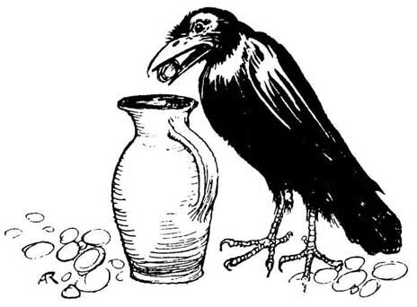
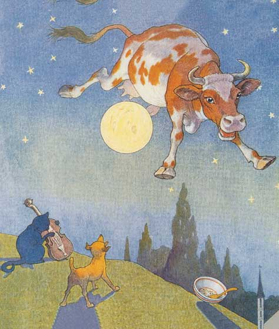
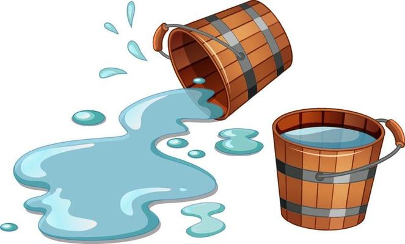
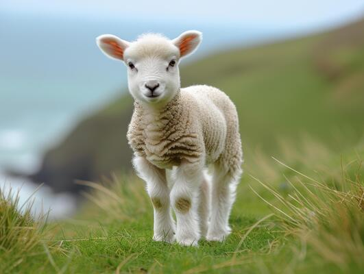

The Crow and the Pitcher
In a spell of dry weather, when the Birds could find very little to drink, a thirsty Crow found a pitcher with a little water in it. But the pitcher was high and had a narrow neck, and no matter how he tried, the Crow could not reach the water. The poor thing felt as if he must die of thirst.
Then an idea came to him. Picking up some small pebbles, he dropped them into the pitcher one by one. With each pebble the water rose a little higher until at last it was near enough so he could drink.


Are You Sleeping
Are you sleeping?
Are you sleeping?
Brother John?
Brother John?
Morning bells are ringing.
Morning bells are ringing.
Ding, ding, dong.
Ding, ding, dong.
Hey Diddle Diddle
Hey, diddle, diddle,
The cat and the fiddle,
The cow jumped over the moon.
The little dog laughed
To see such sport
And the dish ran away with the spoon.

Humpty Dumpty
Humpty Dumpty sat on a wall.
Humpty Dumpty had a great fall.
All the king’s horses and all the king’s men
Couldn’t put Humpty together again!

Jack and Jill
Jack and Jill
Went up the hill
To fetch a pail of water.
Jack fell down
And broke his crown
And Jill came tumbling after.


Mary Had a Little Lamb
Mary had a little lamb
Its fleece was white as snow
And everywhere that Mary went
The lamb was sure to go.
It followed her to school one day
That was against the rule.
It made the children laugh and play
To see a lamb at school.